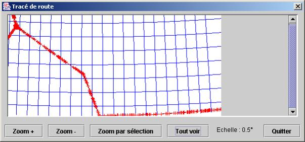
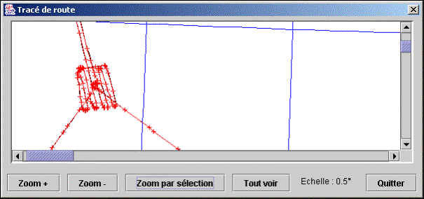
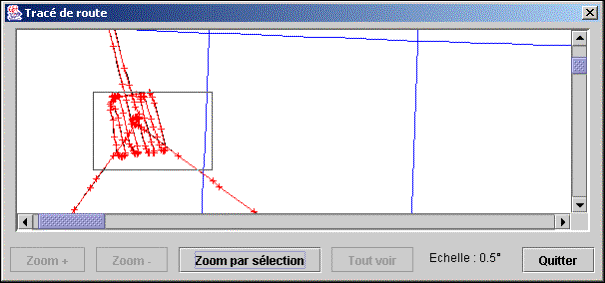

Lorsqu'un segment est sélectionné dans la liste centrale, les boutons de droite et les items du menu "Segment" sont accessibles.
Cette fonction permet de visualiser les coordonnées projetées du segment initial (en noir) et du modèle sélectionné (en rouge). Le tracé fait aussi apparaître les méridiens (en bleu).

Un texte affiché en bas de la fenêtre donne l'échelle du tracé. Cette échelle correspond à la distance angulaire entre deux tracés de méridien (en bleu).
Lorsqu'elle s'affiche, la fenêtre qui trace le segment est paramétrée pour que l'ensemble du segment soit visible. Les boutons de la barre inférieure et les barres de défilement donnent la possibilité de visualiser n'importe quelle zone.

Les boutons ont la fonction suivante :
|
Zoom + |
augmente le facteur de zoom, donc agrandi le tracé |
|
Zoom - |
diminue le facteur de zoom, donc rapetisse le tracé |
|
Zoom par sélection |
permet de définir sur le dessin une zone à visualiser |
|
Tout voir |
revient à une échelle qui permet de voir l'ensemble du segment |
Lorsque le boutons « Zoom par sélection » est activé, la visionneuse passe dans un mode de sélection de zone. Les autres boutons sont grisés et la zone de dessin permet de définir un rectangle en faisant glisser la souris avec le bouton gauche enfoncé.

Cette fonction effectue le calcul décrit au §3.3.3 sur le segment sélectionné. Elle affiche une boîte de dialogue pour permettre de saisir le nombre de points que l'on désire obtenir à l'issue de l'optimisation. Un seul modèle est calculé, il est nommé "perso".
Après ce calcul, la liste des segments est mise à jour. Comme chaque segment contient un seul modèle, les colonnes "modèle" de chaque segment sont inactives.
Cette fonction effectue sur le segment sélectionné le calcul de base décrit au §3.3.2, il s'agit donc de la même opération que le calcul automatique des modèles décrit au §4.3.2, sauf qu'il n'opère que sur le segment sélectionné.